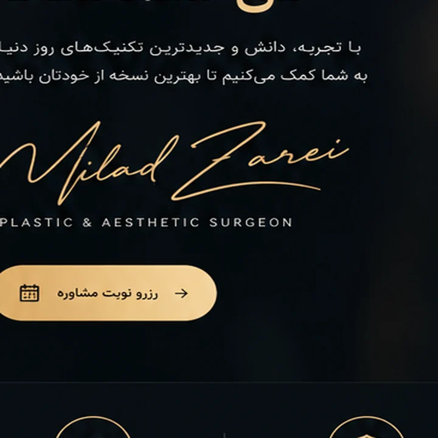
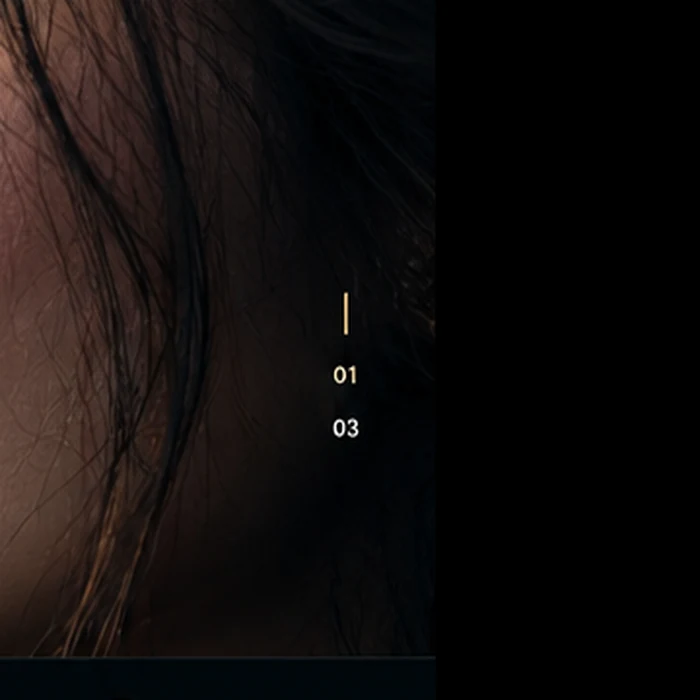

♢
نتایج طبیعی
زیبایی متناسب با چهره شما
با تجربه، دانش و جدیدترین تکنیکهای روز دنیا، به شما کمک میکنیم تا بهترین نسخه از خودتان باشید.
زیبایی متناسب با چهره شما
رعایت کامل استانداردهای پزشکی
سالها تجربه و هزاران جراحی موفق
پیش و پس از جراحی
هر چهره، داستانی منحصربهفرد از زیبایی و اعتماد به نفس دارد.


تمرکز بر تناسب، عملکرد و نتیجهای طبیعی؛ با طراحی درمان اختصاصی برای هر بیمار.
برای دریافت مشاوره، تعیین وقت و پاسخ به سوالات خود از راههای ارتباطی زیر استفاده کنید.
رزرو نوبت آنلاین ←